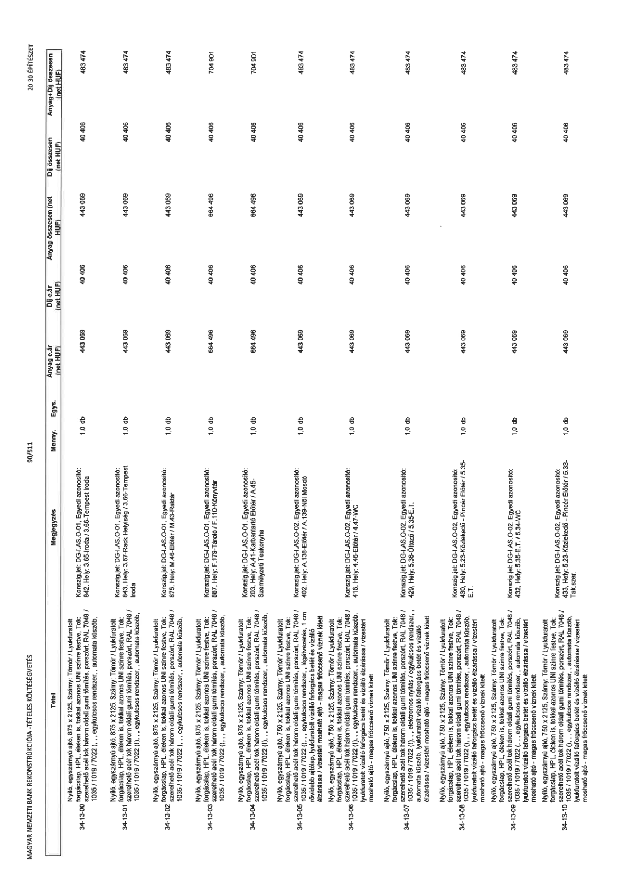

| Tétel | Megjegyzés | Menny. | Egys. | Anyag e.ár (net HUF) | Díj e.ár (net HUF) | Anyag összesen (net HUF) | Díj összesen (net HUF) | Anyag+Díj összesen (net HUF) |
|---|---|---|---|---|---|---|---|---|
| 34-13-00 | Nyíló, egyszárnyú ajtó, 875 x 2125, Szárny: Tömör / Lyukfúratolt forgácslap, HPL, éleken is, tokkal azonos UNI színre festve, Tok: szerelhető acél tok három oldali gumi tömítés, porszórt, RAL 7048 / 1035 / 1019 / 7022 (!),, egykulcsos rendszer,, automata küszöb,; Konszign.jel: DG-I.AS.O-01, Egyedi azonosító: 842, Hely: 3.65-Iroda / 3.66-Tempest Iroda | 1,0 | db | 443 069 | 40 406 | 443 069 | 40 406 | 483 474 |
| 34-13-01 | Nyíló, egyszárnyú ajtó, 875 x 2125, Szárny: Tömör / Lyukfúratolt forgácslap, HPL, éleken is, tokkal azonos UNI színre festve, Tok: szerelhető acél tok három oldali gumi tömítés, porszórt, RAL 7048 / 1035 / 1019 / 7022 (!),, egykulcsos rendszer,, automata küszöb,; Konszign.jel: DG-I.AS.O-01, Egyedi azonosító: 843, Hely: 3.67-Rack Helyiség / 3.66-Tempest Iroda | 1,0 | db | 443 069 | 40 406 | 443 069 | 40 406 | 483 474 |
| 34-13-02 | Nyíló, egyszárnyú ajtó, 875 x 2125, Szárny: Tömör / Lyukfúratolt forgácslap, HPL, éleken is, tokkal azonos UNI színre festve, Tok: szerelhető acél tok három oldali gumi tömítés, porszórt, RAL 7048 / 1035 / 1019 / 7022 (!),, egykulcsos rendszer,, automata küszöb,; Konszign.jel: DG-I.AS.O-01, Egyedi azonosító: 875, Hely: M.46-Előtér / M.43-Raktár | 1,0 | db | 443 069 | 40 406 | 443 069 | 40 406 | 483 474 |
| 34-13-03 | Nyíló, egyszárnyú ajtó, 875 x 2125, Szárny: Tömör / Lyukfúratolt forgácslap, HPL, éleken is, tokkal azonos UNI színre festve, Tok: szerelhető acél tok három oldali gumi tömítés, porszórt, RAL 7048 / 1035 / 1019 / 7022 (!),, egykulcsos rendszer,, automata küszöb,; Konszign.jel: DG-I.AS.O-01, Egyedi azonosító: 887, Hely: F.179-Tároló / F.110-Könyvtár | 1,0 | db | 664 496 | 40 406 | 664 496 | 40 406 | 704 901 |
| 34-13-04 | Nyíló, egyszárnyú ajtó, 875 x 2125, Szárny: Tömör / Lyukfúratolt forgácslap, HPL, éleken is, tokkal azonos UNI színre festve, Tok: szerelhető acél tok három oldali gumi tömítés, porszórt, RAL 7048 / 1035 / 1019 / 7022 (!),, egykulcsos rendszer,, automata küszöb,; Konszign.jel: DG-I.AS.O-01, Egyedi azonosító: 203, Hely: A.41-Karbantartó Előtér / A.45-Személyzeti Teakonyha | 1,0 | db | 664 496 | 40 406 | 664 496 | 40 406 | 704 901 |
| 34-13-05 | Nyíló, egyszárnyú ajtó, 750 x 2125, Szárny: Tömör / Lyukfúratolt forgácslap, HPL, éleken is, tokkal azonos UNI színre festve, Tok: szerelhető acél tok három oldali gumi tömítés, porszórt, RAL 7048 / 1035 / 1019 / 7022 (!),, egykulcsos rendszer,, légátvezetés, 1 cm rövidebb ajtólap, lyukfúratolt vízálló faforgács betét és vízálló élzárása / vízestéri mosható ajtó - magas fröccsenő víznek kitett; Konszign.jel: DG-I.AS.O-02, Egyedi azonosító: 402, Hely: A.138-Előtér / A.139-Női Mosdó | 1,0 | db | 443 069 | 40 406 | 443 069 | 40 406 | 483 474 |
| 34-13-06 | Nyíló, egyszárnyú ajtó, 750 x 2125, Szárny: Tömör / Lyukfúratolt forgácslap, HPL, éleken is, tokkal azonos UNI színre festve, Tok: szerelhető acél tok három oldali gumi tömítés, porszórt, RAL 7048 / 1035 / 1019 / 7022 (!),, egykulcsos rendszer,, automata küszöb, lyukfúratolt vízálló faforgács betét és vízálló élzárása / vízestéri mosható ajtó - magas fröccsenő víznek kitett; Konszign.jel: DG-I.AS.O-02, Egyedi azonosító: 416, Hely: 4.46-Előtér / 4.47-WC | 1,0 | db | 443 069 | 40 406 | 443 069 | 40 406 | 483 474 |
| 34-13-07 | Nyíló, egyszárnyú ajtó, 750 x 2125, Szárny: Tömör / Lyukfúratolt forgácslap, HPL, éleken is, tokkal azonos UNI színre festve, Tok: szerelhető acél tok három oldali gumi tömítés, porszórt, RAL 7048 / 1035 / 1019 / 7022 (!),, elektromos nyitás / egykulcsos rendszer,, automata küszöb, lyukfúratolt vízálló faforgács betét és vízálló élzárása / vízestéri mosható ajtó - magas fröccsenő víznek kitett; Konszign.jel: DG-I.AS.O-02, Egyedi azonosító: 429, Hely: 5.36-Öltöző / 5.35-E.T. | 1,0 | db | 443 069 | 40 406 | 443 069 | 40 406 | 483 474 |
| 34-13-08 | Nyíló, egyszárnyú ajtó, 750 x 2125, Szárny: Tömör / Lyukfúratolt forgácslap, HPL, éleken is, tokkal azonos UNI színre festve, Tok: szerelhető acél tok három oldali gumi tömítés, porszórt, RAL 7048 / 1035 / 1019 / 7022 (!),, egykulcsos rendszer,, automata küszöb, lyukfúratolt vízálló faforgács betét és vízálló élzárása / vízestéri mosható ajtó - magas fröccsenő víznek kitett; Konszign.jel: DG-I.AS.O-02, Egyedi azonosító: 430, Hely: 5.23-Közlekedő - Pincér Előtér / 5.35-E.T. | 1,0 | db | 443 069 | 40 406 | 443 069 | 40 406 | 483 474 |
| 34-13-09 | Nyíló, egyszárnyú ajtó, 750 x 2125, Szárny: Tömör / Lyukfúratolt forgácslap, HPL, éleken is, tokkal azonos UNI színre festve, Tok: szerelhető acél tok három oldali gumi tömítés, porszórt, RAL 7048 / 1035 / 1019 / 7022 (!),, egykulcsos rendszer,, automata küszöb, lyukfúratolt vízálló faforgács betét és vízálló élzárása / vízestéri mosható ajtó - magas fröccsenő víznek kitett; Konszign.jel: DG-I.AS.O-02, Egyedi azonosító: 432, Hely: 5.35-E.T. / 5.34-WC | 1,0 | db | 443 069 | 40 406 | 443 069 | 40 406 | 483 474 |
| 34-13-10 | Nyíló, egyszárnyú ajtó, 750 x 2125, Szárny: Tömör / Lyukfúratolt forgácslap, HPL, éleken is, tokkal azonos UNI színre festve, Tok: szerelhető acél tok három oldali gumi tömítés, porszórt, RAL 7048 / 1035 / 1019 / 7022 (!),, egykulcsos rendszer,, automata küszöb, lyukfúratolt vízálló faforgács betét és vízálló élzárása / vízestéri mosható ajtó - magas fröccsenő víznek kitett; Konszign.jel: DG-I.AS.O-02, Egyedi azonosító: 433, Hely: 5.23-Közlekedő - Pincér Előtér / 5.33-Tak.szer. | 1,0 | db | 443 069 | 40 406 | 443 069 | 40 406 | 483 474 |
